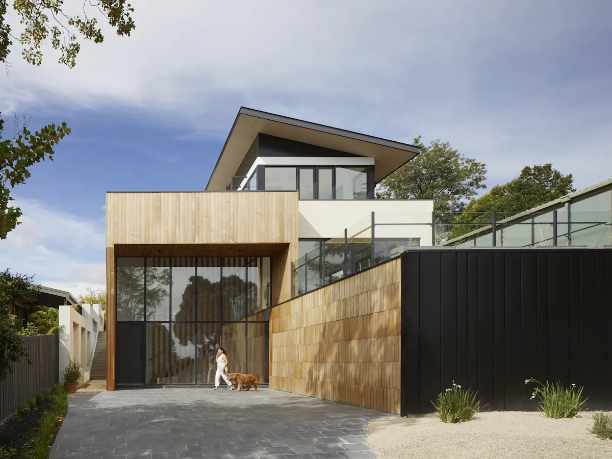

新築 / WORKS 01
緑と暮らす、木格子の平屋

CONCEPT
庭とつながる、木格子越しの暮らし
敷地の緑を活かしたいというご要望から、リビング全面に木格子のスクリーンを設けた平屋をご提案。視線を程よく遮りながら、光と風を室内へ届けます。国産杉の格子は経年で色味が深まり、庭の緑との調和も増していきます。
| 所在地 | 架空県つむぎ市 |
|---|---|
| 家族構成 | ご夫婦+お子様2人 |
| 延床面積 | 119.5㎡(約36坪) |
| 構造 | 木造軸組工法 平屋 |
| 工期 | 約7ヶ月 |
| 使用素材 | 国産杉格子 / 無垢フローリング |
GALLERY
施工ギャラリー


RELATED